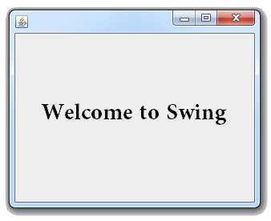
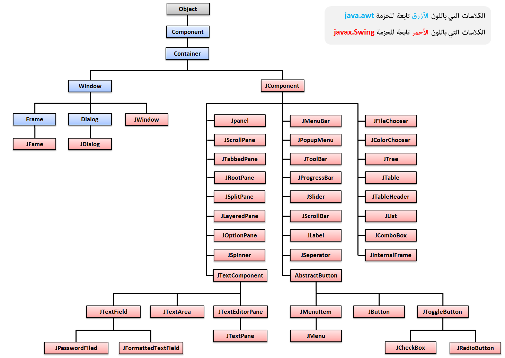

Java Swingنظرة عامة
هل أنا جاهز لتعلم Swing ؟
قبل أن تتعلم Swing يجب أن تتعلم الخوارزميات و لغة جافا للأسباب التالية:
لا تقلق إذا لم يسبق لك أن تعلمتهما لأننا شرحنا الخوارزميات و لغة جافا من الصفر.
تعلم الخوارزميات » تعلم لغة جافا »
إذاً تم إعداد هذه الدورة لتكون مرجعاً شاملاً لكل شخص تعلم الخوارزميات و لغة جافا من موقعنا و ينوي تعلم بناء تطبيقات سطح المكتب باستخدام المكتبة Swing.
ما هي المكتبة Swing ؟
في البداية, واجهة المستخدم تسمى Graphical User Interface في اللغة الإنجليزية و تختصر بـ GUI.
المقصود من واجهة المستخدم هو بناء برامج فيها واجهات رسومية كما في الصورة التالية.

المكتبة AWT هي أول مكتبة تم تطويرها لبناء واجهة المستخدم.
بعدها تم تطوير المكتبة Swing و التي بدورها تعتمد على المكتبة AWT.
كلا الحزمتين السابقتين تحتويان على كلاسات كثيرة يمكن إستخدامها لبناء واجهة المستخدم.
في هذه الدورة سنركز على الكلاسات الموجودة في المكتبة Swing و نستخدم فقط ما نحتاجه من المكتبة AWT.
بناء المكتبتين AWT و Swing
لتستخدم كلاسات المكتبة AWT عليك أن تفعل لهم import من هذا المسار java.awt.
لتستخدم كلاسات المكتبة Swing عليك أن تفعل لهم import من هذا المسار javax.swing.
الصورة التالية توضح لك كيف تم بناء المكتبتين AWT و Swing.

كل كلاس من هذه الكلاسات يمثل شيء معين من الأشياء التي يمكن إضافتها في واجهة المستخدم.
أمثلة
الكلاس JFrame يستخدم لإضافة نافذة.
الكلاس JButton يستخدم لإضافة زر.
الكلاس JLabel يستخدم لإضافة عنوان أو صورة.
الكلاس JTextArea يستخدم لإضافة فقرة.
الكلاس JTextFielad يستخدم لإضافة مربع إدخال النصوص.
الكلاس JList يستخدم لإضافة قائمة.
الكلاس JTable يستخدم لإضافة جدول إلخ..
إذاً كل كائن ننشئه من كلاس موجود في المكتبة Swing يعطينا شيء معين يمكن إضافته في واجهة المستخدم.
في هذه الدورة ستتعرف على كل شيء يمكنك إضافته في النافذة خطوة خطوة.
في الأخير سنعلمك طريقة بناء تطبيقات و ألعاب باستخدام المكتبة Swing و عندها ستعرف فائدة كل شيء تعلمته سابقاً في مادة الخوارزميات و جافا.
الطريقة الصحيحة للتعلم
لا تحاول تعلم Swing ما لم تتعلم الخوارزميات و جافا قبلها لأنك قد تواجه صعوبة كبيرة في فهم الكود أحياناً حتى لو كان الكود مشروح بتفصيل و سهل الفهم.
قم بدراسة جميع الدروس بنفس الترتيب الموضوعين فيه لأننا شرحنا جميع الأفكار بشكل مترابط.
قم بتجربة الأمثلة الموضوعة في كل درس على الكمبيوتر, و حاول كتابة الكود من جديد بنفسك و تلاعب بالكود حتى تفهمه و تقتنع به أكثر.
في الأخير قم بدراسة التطبيقات والألعاب التي وضعناها لأنك ستتعلم منها كيف تستفيد من كل شيء تعلمته سابقاً و ستتعلم الكثير من الأشياء الجديدة.
بالنسبة للبرنامج الذي ستحتاجه لبناء التطبيقات, يمكنك إستخدام برنامج Netbeans الذي شرحنا طريقة تحميله, تنصيبه و إستخدامه في دورة جافا.

 محرر الويب
محرر الويب نظام الألوان
نظام الألوان محول الوحدات
محول الوحدات محلل عناوين الشبكات
محلل عناوين الشبكات